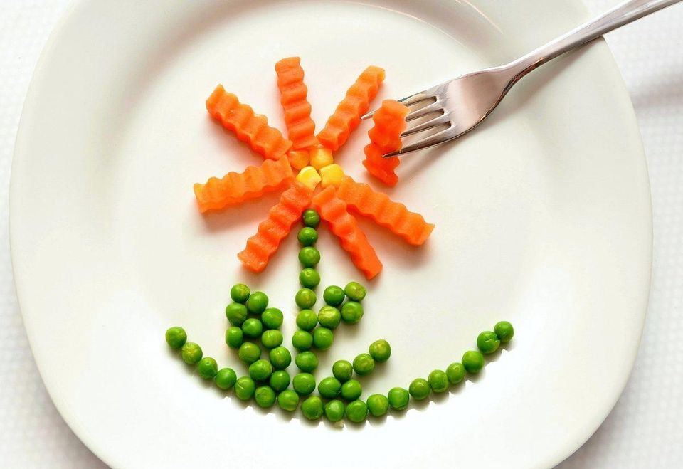

How To Start Eating Healthy
Margaret Mead had rightly said, “It is easier to change a man's religion than to change his diet.” For most of us, changing unhealthy eating habits is a Herculean task. In fact, according to a 2012 study, more than 50% of Americans (that were polled) felt that doing their taxes is easier than figuring out how to eat healthy.

Here are ten easy-peasy tips to start eating healthy this year (and actually stick to it):
- Choose whole foods instead of processed. Swap your frozen pizza and instant ramen with whole foods like fresh fruits, vegetables, and whole grains. They are packed with essential nutrients like protein, fiber, healthy fats, vitamins and minerals as opposed to processed foods which contain empty calories. “Commit to adding veggies to your lunch and dinner and fruit to your snack,” suggests DiCarlo.
- Say no to sugary drinks. The average American drinks around 45 gallons of soda each year, according to the Beverage Marketing Corporation. Other than the obvious risk of Type 2 diabetes and obesity, consuming sugary beverages can also cause anxiety. So, instead of sipping packaged juice or soda, go for unsweetened beverages or infused water.
- Keep healthy food readily available. When you get hungry, you’re more likely to eat the first thing you see on the counter or in the cupboard. Keep healthy food in easily accessible and visible places in your home and workplace. Put some fruits in a basket and place it on the kitchen counter, store healthy snacks at eye level in your pantry and stock up your fridge with small batches of cooked whole grains and fresh fruits and vegetables. At work, store quick bites like almonds, pistachios and dried berries in a jar and place it on your desk or in its top drawer.
- Try the “Outer Ring” technique while buying food. Author James Clear suggests using this smart strategy, while grocery shopping. “Only shop on the outer perimeter of the store. This is usually where the healthy food lives: fruits, vegetables, lean meats, fish, eggs, and nuts. If you only shop on the outer ring, then you’re more likely to buy healthy foods,” he explains.
- Go nuts for nuts (and seeds). From protein and healthy fats to vitamins and minerals, these superfoods pack a serious nutritional punch. Similarly, seeds like chia, flaxseed and pumpkin seeds are nutritional powerhouses too. They are an excellent source of vitamins, antioxidants, and minerals like calcium, zinc, and magnesium. You can add them to your favorite baking recipe, sprinkle them over your cereal or simply munch on them instead of a candy bar.
- Eat more fish. The American Heart Association recommends eating fish (particularly fatty fish like salmon and mackerel) at least twice a week. Loaded with omega-3 fatty acids, this superfood improves brain and heart health and may reduce the risk of diseases like Alzheimer’s, dementia and diabetes.
- Use whole grain flour in baking recipes. For some guilt-free indulgence, use whole grain flour in your baking recipes. Whole grain flour includes the bran and the germ which make it more nutritious than its refined counterpart. Start off by subbing half of the flour in the recipe with spelt flour (or any other whole grain flour of your choice) and see how it works. Here are some handy tips for baking with whole grain flours.
- Eat in smaller plates. Science says that eating on a large plate tricks your brain into thinking that you haven’t eaten enough. Eat on a smaller plate to feel full quicker and avoid overeating. Moreover, the color of your plate could impact your food intake as well. According to a study conducted by Cornell University, people eat less when there is a higher color contrast between the plate and the food. If the color contrast between the two is lower, we tend to eat more. For instance, if you eat pasta with alfredo sauce on a white plate, you’ll probably eat more as compared to eating in, say, a blue plate.
- Count nutrients, not calories. If you want to improve the quality of your diet, focus on the nutrients in your food instead of calories. “Our energy intake can only depend on our ability to extract that energy from food,” writes blogger and nutritionist Rhiannon Mack. “All calories are not created equal – it is the quality of the calorie that has the most impact on health, not necessarily the quantity,” she explains in a post that appeared in Move Nourish Believe.